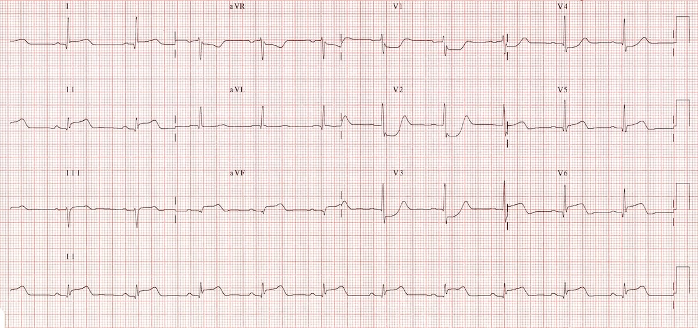

- احتشاء عضلة القلب يعتبر المسبب الأول للوفاة في العالم العربي بشكل خاص وفي العالم أجمع بشكل عام. ولأن تشخيصه يعتمد بشكل عام على المقدرة على التعرف على الأعراض إضافة للتغيرات الموجودة في التخطيط وأخيراً انزيمات القلب وجب على كل طبيب أن يستطيع التعرف على التغيرات في التخطيط القلبي المصاحبة لهذا المرض.
-
يتفرع احتشاء عضلة القلب إلى نوعين. الأول يصاحبه ارتفاع في
المسافة ما بين
S-Tو يعرف بSTEMIأوST elevation myocardial infarctionو الأخر يصاحبه اما انخفاض فيSTأو تغيرات تطرأ على موجةTويعرف بNSTEMIأوNon ST elevation myocardial infarction. كلا النوعين مهم لكن الأول (STEMI) يعتبر من الحالات الحرجة حيث أن التدخل الطبي العاجل واجب خلال نافذة زمنية تقدر ب ١٢٠ دقيقة من التشخيص. -
بعض التغيرات التي تؤثر على التخطيط تُصعب على الممارس الطبي
التعرف على التغيرات الطارئة على مسافة
ST. لعل من أهمها وجود Bundle branch block لكن توجد هناك بعض الطرق لتسهيل التشخيص نوعاً ما لعل من أشهرها طريقة Sgarbossa.
| STEMI | NSTEMI |
|---|---|
| انسداد كامل في أحد الشرايين التاجية | انسداد جزئي في أحد الشرايين التاجية |
ارتفاع افقي في المسافة ST |
انخفاض افقي في المسافة ST |
| يصاحبه ارتفاع في انزيمات القلب | يصاحبه ارتفاع في انزيمات القلب |
تخطيط لمريض قدم بالام حادة في الصدر. لاحظ ارتفاع ال ST segment.
STEMI
-
هنالك بعض الأمور يجب معرفتها :
-
في الشخص الطبيعي قد يلاحظ ارتفاعاً في
STفي الالكترودV2-V3بمقدار لا يزيد عن ١-٢ مم. -
لكي نستطيع أن نطلق على هذا الارتفاع في ال
STارتفاعاً باثولوجي , أي أنه قد يدل على المرض , يجب أن يكون الارتفاع في الكترودين متتاليين في التخطيط. -
الالكترودات في التخطيط مقسمة على مناطق تدل على المنطقة
المأخوذ منها قراءة التخطيط. كمثال
II, III, AVFتدلنا على المنطقة السفلى من القلب inferior ووجود ارتفاعSTهنالك يدل على وجود احتشاء في هذه المنطقة. -
يصاحب في اغلب الاحيان أي ارتفاع في منطقة
STانخفاضاً في الSTفي المنطقة المقابلة لهذا الالكترود. - وجود Bundle branch block حديث لم يكن موجودا في تخطيط سابق إضافة إلى الأعراض يرجح بشدة وجود انسداد في الشريان المغذي لهذه المنطقة. في معظم الأحيان يكون الشريان المعني هو LAD.
- مقارنة أي تخطيط قديم جدا مهمة. بهذه الطريقة يمكنك اكتشاف أي تغير طرأ على التخطيط.
-
في الشخص الطبيعي قد يلاحظ ارتفاعاً في

موقع ال J point في التخطيط
-
ال
J pointهي نقطة التقاء الQRSبخط الST. في تشخيص حالات الاحتشاء نقوم باستخدام الJ pointكمقياس لمدى ارتفاعSTو نقوم بمقارنتها بخط الاستواء الكهربي Isoelectrical line الذي يكون بالعادة في نفس مستوى مسافةT-P. -
يمكن أيضا استخدام نقطة بداية موجة
Qكمقياس لخط الاستواء الكهربي. -
في ما عدا
V2 , V3، أي ارتفاع في الSTيزيد عن ١ مم في الكترودين متتاليين أو أكثر يرجح الكفة لتشخيص الاحتشاء القلبي. -
بالنسبة ل
V2 , V3بارتفاع يزيد عن ٢ مم (١,٥ مم في الإناث) يعتبر باثولوجي أن وجد في الكترودين متتاليين أو أكثر. بالنسبة للبالغين الذكور دون ٤٠ سنة فالحد هنا هو ٢,٥ مم

انخفاص في مستوي ST في الالكترود V1, V2 دلالة على ارتفاع في ال ST في المنطقة الخلفية للقلب
-
الانخفاض في
STفي الالكترودينV1 , V2قد يكون دلالة على ارتفاع في الSTفي المنطقة الخلفية للقلب حيث لا نقوم بالعادة بقياس التخطيط من تلك المنطقة. في هذه الحالة يحبذ أخذ تخطيط خلفي أيضا بالكترودين أو ثلاثة لاستبعاد احتمالية وجود احتشاء في تلك المنطقة.
Pathological Q wave in addition to a ST wave elevation in the anterior leads
-
وجود موجة
Qفي التخطيط بعمق أكبر من 2 مم او بعمق أكبر من ٢٥% من ارتفاعQRSيدل على وجود احتشاء قديم خصوصا أن تمت ملاحظته في موضعين متتاليين في التخطيط. لكن وجودها في تخطيط إضافة إلى وجود ارتفاع في الSTيرجح بشدة وجود احتشاء جديد إضافة انه يزيد من خطورة Prognosis للمرض.

انخفاض في ال ST في اغلب الاجزاء الامامية للتخطيط جراء انسداد شبه كامل في الشريان الايسر الرئيسي Left main.
-
تواجد انخفاض في ال
STفي اغلب أجزاء التخطيط مع وجود الأعراض يرجح وجود انسداد في أكثر من شريان تاجي. - توجد هنالك بعض الصور و الأنماط الغير معتادة لتشخيص ال STEMI لعل من أشهرها ولين Wellen و علامة دي ونتر De Winter's sign.
De Winter's T wave
-
نمط دي ونتر هو نمط يظهر على التخطيط و يدل على وجود احتشاء
في المنطقة الامامية Anterior من القلب بدون وجود اي ارتفاع
في منطقة ال
ST. - تمت ملاحظة هذا النمط في ٢% من الانسداد الكلي للشريان التاجي LAD.
-
في هذا النمط يلاحظ انخفاض في
STاضافة الى موجةTمرتفعة مقارنة بالQRS. - أهمية التعرف على هذا النمط على الرغم من ندرة حدوثه هي التعرف على حالات ال STEMI و معالجتها في أسرع وقت ممكن.
نمط De winter
NSTEMI
-
في هذا النوع من الاحتشاء يلاحظ اما انخفاض في منطقة ال
STعند نقطةJأو موجةTسالبة في أكثر من موضع في التخطيط. - كما في ال STEMI يستدعي التشخيص وجود هذه التغيرات في الكترودين متتاليين على الأقل في التخطيط.
- على خلاف ال STEMI التدخل الطبي لايزال مهما وواجباً لكن خلال ٤٨ ساعة.
- في حالات ال NSTEMI، يصيب الاحتشاء جزءا من قطر عضلة القلب subendocardial على غرار ال STEMI حيث يصيب الاحتشاء قطر عضلة القلب كلها في الجزء المعني. Transmural.